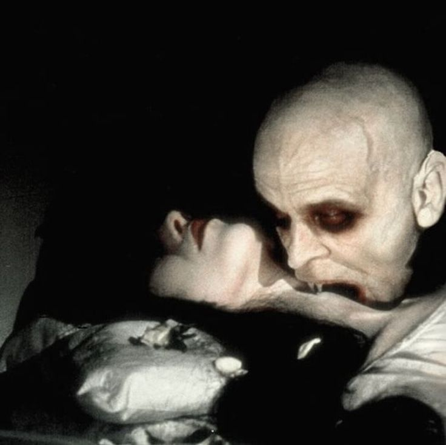

...*~*" Vampire Movies" *~*...



My Top Ten Favorite Vampire Movies
| Ranking |
Movie Title |
Favorite Character(s) |
Vampire Focus (out of 5) |
| 1 |
A Girl Walks Home Alone at Night (2014) |
The Girl |
3/5 |
| 2 |
What We Do In The Shadows (2014) |
Viago |
5/5 |
| 3 |
Nosferatu (1922) |
Ellen & Orlock |
5/5 |
| 4 |
The Twilight Saga: New Moon (2009) |
Alice, Bella & Edward |
100/5 |
| 5 |
Twilight(2008) |
Edward, Bella & Alice |
5/5 |
| 6 |
The Twilight Saga: Breaking Dawn Part 1 (2011) |
Edward, Bella & Alice |
5/5 |
| 7 |
Interview with the Vampire (1994) |
Claudia |
5/5 |
| 8 |
The Twilight Saga: Eclipse (2010) |
Edward, Bella & Alice |
3/5 |
| 9 |
Monster High: Why Do Ghouls Fall In Love? (2012) |
Clawdeen, Cleo, Draculaura & Ghoulia |
2/5 |
| 10 |
Vamps (2012) |
Stacy |
2/5 |